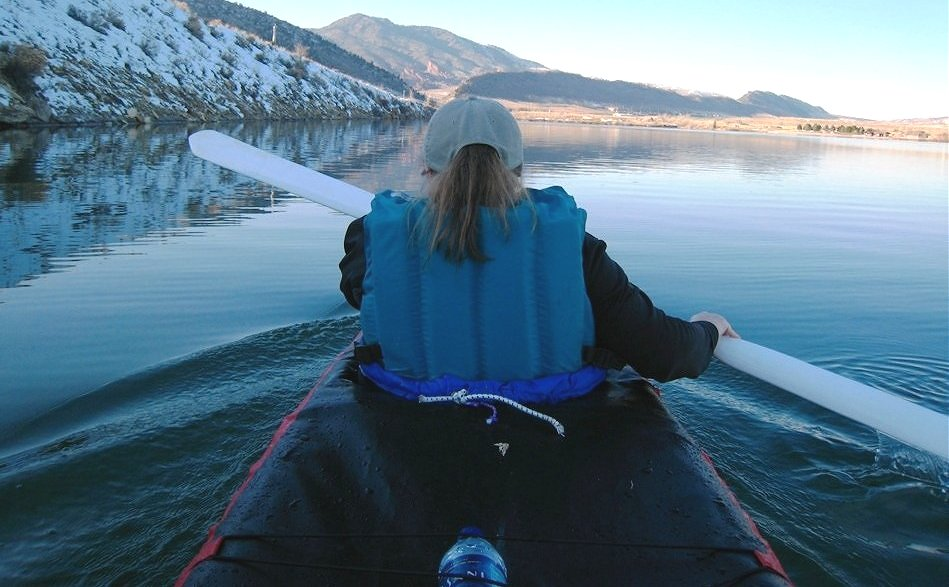

| Sonnet Double (15.5/6) by Tom Yost (US) | Menu Previous Page Next Page |
|

Rita and I paddle the Sonnet Double on a cold day... water temp 37f. At 4'11", she finds the double
easy to paddle due to it's narrow beam, shallow depth, and light weight vs commercial doubles. Stability, like all
Sonnet's, is excellent. It differ's from the 4 sponson Sonnet 14 and 16 due to it's 1" keel tube, and 4 chines vs
2 chines for the Sonnet singles. The added depth provided by the extra sponsons add greatly to it's displacement.
Assembly time for the double is approximatly 20 minutes.
|
|